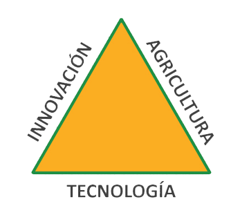

La empresa N° 1 en Latinoamérica, en riego y cuidado de cultivos
¿Quiénes somos?
Somos un proceso patentado, en el cual por medio de aplicaciones móviles generamos la digitalización del terreno de acuerdo a las necesidades del cliente para su mapeo, lo cual nos permite monitorear, analizar y planear las operaciones.
Innovación tecnológica
Integración de TI en agricultura
Análisis de datos

TechnoCrop Guard
Contamos con un proceso de innovación tecnológica para el control y monitoreo efectivo en la agricultura, a través de la integración de las tecnologías de la información en la agricultura; se logran generar, recolectar y analizar datos que permiten una toma de decisiones eficientes y eficaces en los cultivos. Impactando la salud de los mismos, la disminución de costos y la reducción del impacto ambiental de la agricultura.